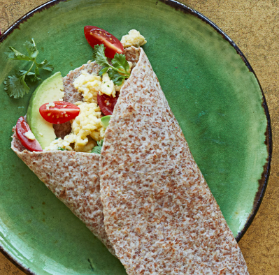

Egg Wrap

- Ezekiel Tortilla
- 1 or 2 eggs depending on how hungry you are
- Feta Cheese
- Diced Tomato
- Baby Spinach, Spring Mix, or whatever salad greens you have laying around
- Cook the egg with feta and tomato adding salt and pepper to taste
- On a gas burner: turn the heat on low and place the tortilla on top about 10 seconds on each side. Use a pan for an electric burner
- Wrap it up the the toasted tortilla with the leafy green and your choice of condiment